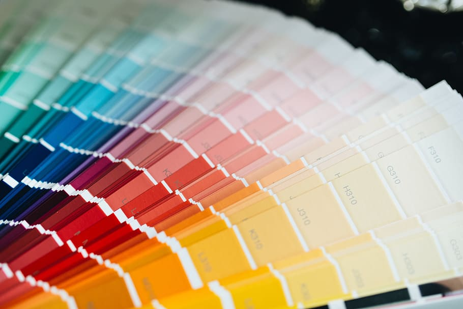
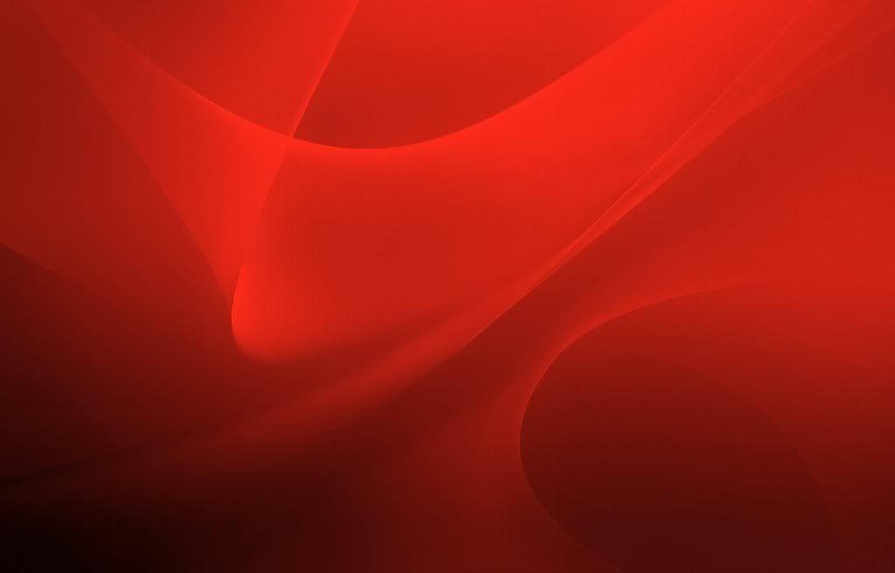
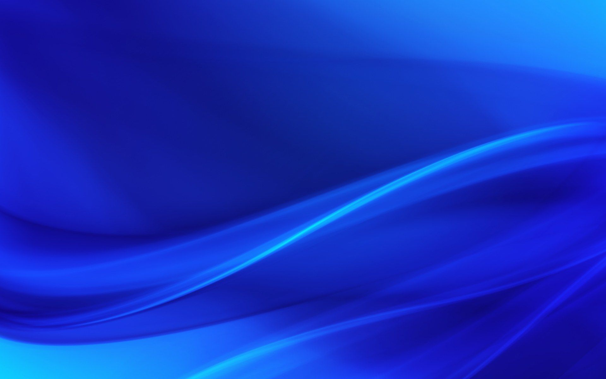
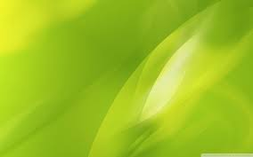

Ко́лір (у контексті теми також ба́рва) — суб'єктивна характеристика сприйняття світлової хвилі, яка ґрунтується на здатності людського зору розрізняти електромагнітне випромінювання з довжиною хвиль у межах видимого діапазону (видимий діапазон — довжини хвиль від 380 до 760 нм). Сприйнятий колір (випромінення або об'єкта) залежить від його спектру та від психофізіологічного стану людини.
Розрізняють спектральні і неспектральні кольори (наприклад, пурпурний або брунатний колір), а також ахроматичні кольори (білий, сірий, чорний).
Відчуття кольору виникає в мозку при збудженні і гальмуванні світлочутливих клітин — рецепторів очної сітківки людини або іншої тварини, колбочках. Вважається (хоча дотепер так ніким і не доведено), що у людей та інших приматів існує три види колбочок, що розрізняються за спектральною чутливістю — ρ (умовно «червоні»), γ (умовно «зелені») і β (умовно «сині»), відповідно[3]. Світлочутливість колбочок невисока, тому для доброго сприйняття кольору потрібна достатня освітленість або яскравість. Найбагатші колірними рецепторами центральні частини сітківки.
Кожне колірне відчуття у людини, може бути представлено у вигляді сукупності відчуттів цих трьох кольорів (т. зв. «трикомпонентна теорія колірного зору»). Встановлено, що рептилії, птахи та деякі риби мають ширшу область відчутного оптичного випромінювання. Вони сприймають ближній ультрафіолет (300—380 нм), синю, зелену і червону частину спектра. У разі досягнення потрібної для сприйняття кольору яскравості, найчутливіші рецептори сутінкового зору — палички — автоматично вимикаються.

Черво́ний (від давньорус. черленый, червеный) — колір з мінімальною частотою, що сприймається людським оком. Діапазон червоних кольорів в спектрі з довжиною хвилі 630—760 нанометрів, межа сприйняття залежить від віку. Один з трьох «основних» кольорів в системі RGB, додатковий колір до нього — синьо-зелений. Червоний — це перший колір веселки. У геральдиці — червінь.
Червоний у багатьох мовах дорівнює гарний. У чималій кількості культур він довго був єдиним кольором, все інше не було кольорами, все інше – це якісь відхилення чорного, білого та червоного, а червоний – це справжній колір.
У XX столітті знайшли багато печер з малюнками, створеними 30-40 тисяч років тому. Гама кольорів там доволі убога. Є трохи чорного, але переважна кількість відтінків червона. Коли хіміки аналізували пігменти, які використовували давні люди для цього червоного кольору, виявилось, що приготовлений він не таким вже й простим способом. Прадавні люди знаходили спеціальні пігменти, товкли, варили і все це було дуже складно. У них була ціль створити саме червоний колір.
Червоний – це єдиний яскравий колір, який ми бачимо навіть у середньовічній Європі. Червоний колір одягають як щось гарне. Зрозуміло, що цю властивість червоного кольору, асоціацію з красою, зі святом, із чимось збуджуючим і приємним, не обійшли своєю увагою сучасні маркетологи. Тому брендів, які використовують червоний колір, щоб створити святковий настрій, вистачає. Coca-Cola чудово використала цей колір як колір свята. McDonalds червоним створює відчуття того, що тобі хочеться це з’їсти, тому що свято настало. От сьогодні можна, особливий день.

Розпочнемо з античності. Для греків цей колір просто відсутній, він ніде не згадується. Римляни теж не шанували синій, бо він був популярним у варварських народів. Відомо, що ті часто розфарбовували себе синьою фарбою під час зіткнень. Пліній пише, що найкращі живописці використовують лише чотири кольори: білу, жовту, червону і чорну фарбу.
Щоб досягти гарного, стійкого і глибокого пігменту синього треба було використовувати неймовірно дорогі барвники – Lapis Lazzuli (лазурит). Це як майже дорогоцінний камінь перетворити у фарбу. У Європі він дуже рідко використовується і з причини дорожнечі, і через те, що європейців із лазуриту виходить блідий варіант. Водночас на Сході синій застосовують активно. Але загалом майже до XII століття його або немає, або він дуже не значний. Після чого відбулося декілька важливих подій.
У жодному з правил християнського богослужіння до тисячних років синій також не згадується. Але в якийсь момент виникають можливості виробляти більш-менш стійкий, глибокий та яскравий пігмент і з’являється культ Діви Марії. Спочатку її пишуть темними фарбами на знак трауру за Ісусом. Але потім Діва Марія швидко починає зображуватися виключно у синьому плащі, він стає обов’язковим атрибутом. Синій стає символом жіночності й чистоти, що також використовують сучасні бренди.
Ірраціональна частина значення синього асоціюється зі смутком, депресією, пригніченим настроєм. Яскравий приклад — «блакитний» період Пікассо на початку 1900-х років. Пікассо переїхав з Іспанії до Парижу зі своїм близьким другом, і під час якоїсь барної сутички він щось не те сказав, і його пристрелили на очах Пікассо. Після цього митець на декілька років впав у жахливий депресивний стан, не виходив із дому, був дуже пригніченим. І писав картини виключно у блакитних тонах як прояв похмурого настрою.
Синій колір тісно пов’язаний із депресією. Наприклад, музичний стиль блюз — скорочено від blue devils. Вираз blue devils означає меланхолію, тугу, хандру. Також синій традиційно асоціюється з п’янством. Можливо, це через те, що у п’яниць синюваті обличчя. Проте не лише цим це пояснюється. У німецькій мові є такий вираз blaustein. Це означає бути напідпитку. В Англії та Америці є поняття «blue hour» – це час, коли людина повертається з роботи і проводить годинку в барі в надії забути про смуток.

Якщо до синього кольору мода і культура віднеслись сприятливо, то із зеленим все відбувалося не так. Починали вони однаково: і зелений, і синій давні люди не помічали. Коли хотіли їх позначити, називали «темний». У наскельному живописі ми знаходимо різні відтінки, і зеленого там взагалі немає. Василь Кандинський, один з головних людей конструктивізму і баугаузу, описує зелений: «Абсолютний зелений колір – це нерухомий, самовдоволений, обмежений у всіх напрямках елемент».
Якщо у Давній Греції цей колір або відсутній, або його зневажають, то в Римі справи були трохи кращими. По-перше, в латині з’явилось слово для зеленого – «viridis». Цей колір тоді асоціювали з чимось вельми хорошим. Це слово належить сімейству слів, які пов’язані з уявленням про силу та життя. «Virere» – бути зеленим, тобто бути сильним. «Viss» – сила, «vir» – чоловік, «ver» – весна, і навіть, можливо, що є зв’язок зі словом «virtus», доброчесний. Зелений виглядає кольором сили, мужності, весни, доброчесності.
На думку римлян, зелений – могутній колір. Водночас використовується він дуже обмежено, тому що немає нормальних пігментів. Зробити одяг зеленого кольору важко. Єдині барвники, за допомогою яких можна отримати більш менш зелений колір, дають мутний сіро-зелений відтінок. Мутно-зелений – це вже не дуже гарно. Якщо, наприклад, червоний ненасичений, то перетворюється в рожевий. А зеленуватий – неприємний. Одяг, пофарбований у такий зелений, можуть носити лише бідні селяни. Якогось символічного значення він майже не має, тобто він помірно нормальний.
Доля зеленого змінюється, коли на папський престол приходить Інокентій III. Про зелений він говорить, що це проміжний колір. Білий треба носити на позитивних святах, чорний, коли покаяння чи траур, червоний — це колір крові Христа, а зелений можна у всіх інших випадках. Зелений стає популярним.
Однак в геральдику він не ввійшов. На вершині свого розвитку зелений був присутнім лише на 5% гербів. Є думка, що його вбив синій колір, тому що була думка, що зелений із синім не поєднуються. В Англії навіть є приказка: «Blue with green should never been seen», – синій та зелений не повинні бути разом.
У світській спільноті зелений починає асоціюватись з весною, юністю, коханням, приблизно в XI столітті. Зеленим починають позначати бравих, молодих, палких лицарів, які постійно витворяють дурниці з благородних міркувань. Колір юної гарячності. Є навіть такий персонаж – Зелений лицар — найчастіше позитивний, товаришує з червоним чи синім лицарем. Зелений перетворюється на колір весни, колір юності палкості, і починає асоціюватися з коханням, але з коханням мінливим, з коханням, яке приходить і потім йде, з нетерпінням, із жагою швидко щось зробити.